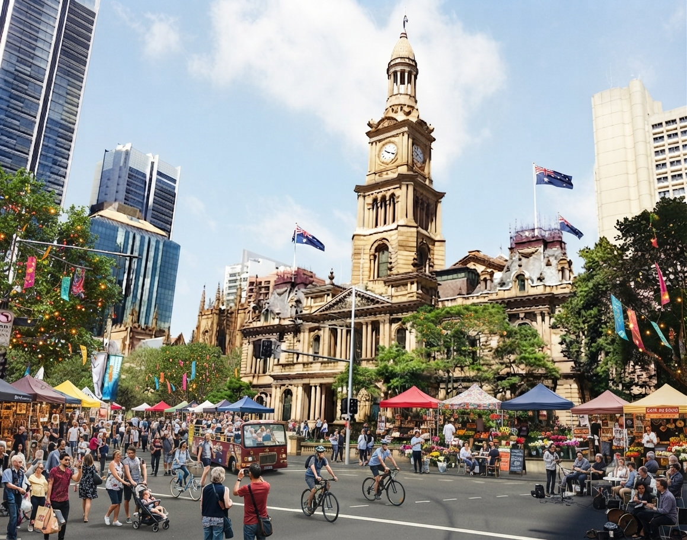

在雪梨的萬家燈火裡，我學會與孤獨對話
打工度假簽證、共居公寓、郵輪上的深夜班表——當所有人都在慶祝自由的同時，我第一次認真面對「一個人」的重量。
閱讀全文 →數位遊牧・心靈手記
這裡記錄一位海外工作者，在雪梨的港口、馬尼拉的賭場、雅加達的舊城區，一段關於「一個人」的冒險旅程。
表面上，這是一個關於打工度假與海外工作的部落格——雪梨的咖啡館、郵輪上的值班表、馬尼拉深夜的霓虹燈，都是真實發生過的場景。
但往下讀你會發現，這裡真正想談的，是那些收拾行李時沒被提起的東西：時差調不回來的焦慮、朋友都在家鄉的失落、深夜裡突然湧上來、不知道該跟誰說的空。
我把每一段漂泊的日子，都當作練習——練習與孤獨對話、練習觀察自己的情緒、練習在移動不定的生活裡，蓋一間只屬於自己的小房子。如果你也正走在類似的路上，這裡想成為你暫時停靠的地方。

打工度假簽證、共居公寓、郵輪上的深夜班表——當所有人都在慶祝自由的同時，我第一次認真面對「一個人」的重量。
閱讀全文 →
在喧囂、酒精與夜班交織的海外職場裡，我開始練習正念——不是逃離混亂，而是在混亂之中，找到一個從未離開過的安靜角落。
閱讀全文 →私密・不評判・只安放
在自由與漂泊的路上，你現在正卡在什麼情緒裡？無論是說不出口的疲憊、找不到方向的焦慮，或只是想找個人說說話——寫下來，讓我成為你的心靈樹洞。這裡不評判，只安放。